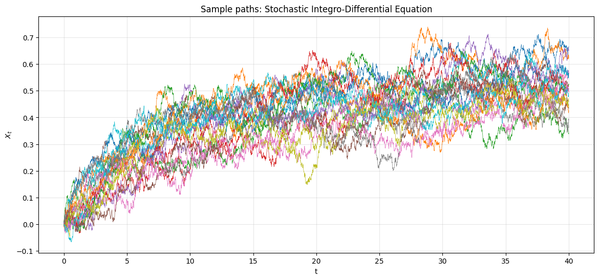
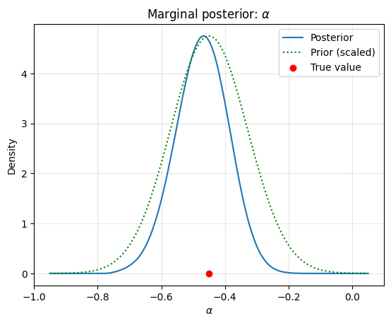
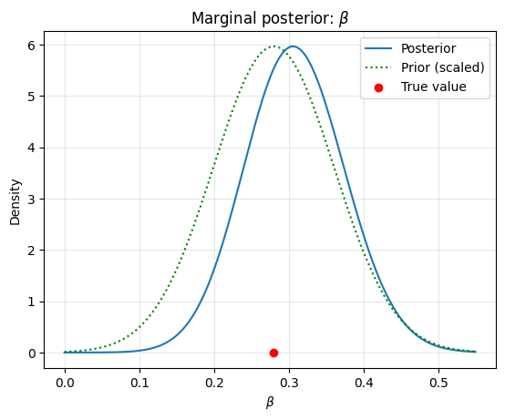
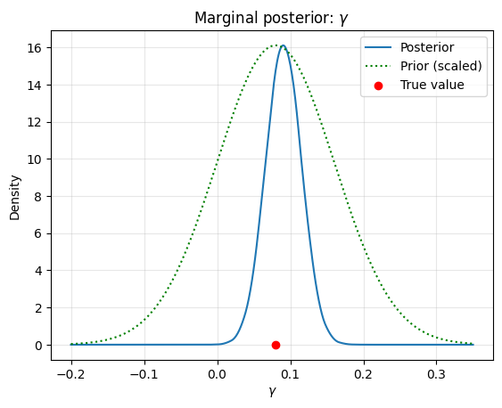
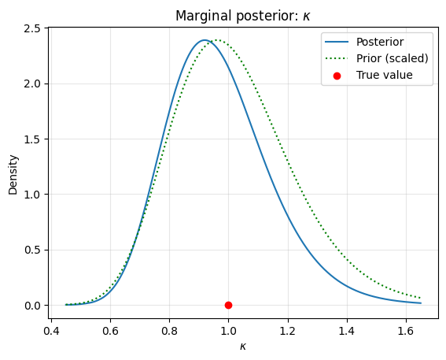
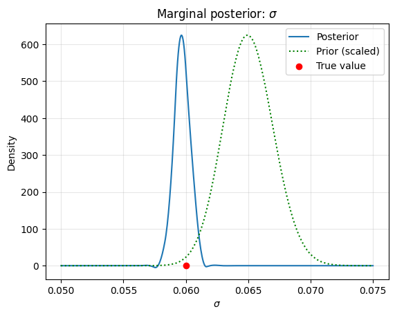
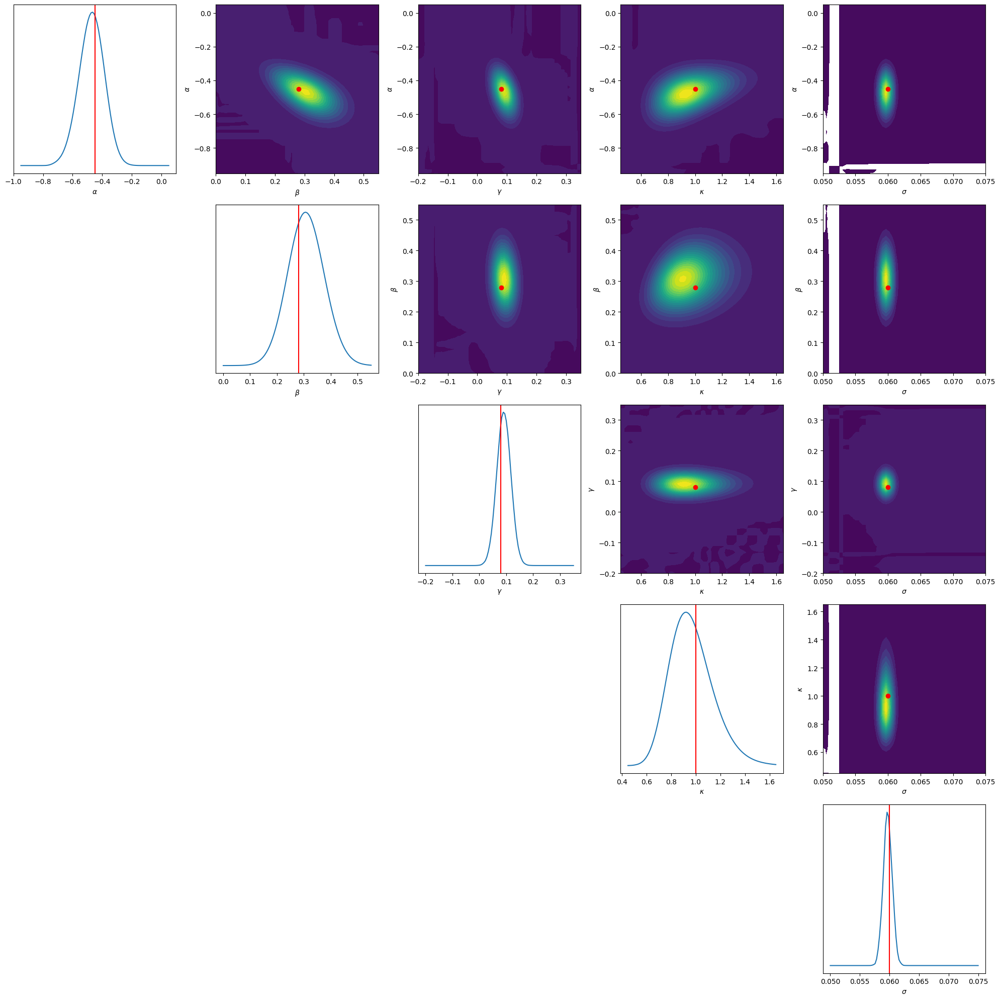

Bayesian Inversion with torchTT
First we define a random process with memory governed by a Stochastic Integro-Differential Equation (SIDE). The process incorporates an integral term with an exponential memory kernel:
where \(W_t\) is a standard Brownian motion and \(\kappa > 0\) controls the decay rate of the memory kernel.
By introducing an auxiliary variable \(I_t = \int_0^t e^{-\kappa(t-s)} X_s \, ds\), we note that \(I_t\) satisfies:
Discretizing using the Euler-Maruyama method gives:
with \(Z_i \sim \mathcal{N}(0, 1)\).
[8]:
import math
import torch
import matplotlib.pyplot as plt
import numpy as np
import torchtt
import torchtt.functional
import time
torch.set_default_dtype(torch.float64)
torch.manual_seed(123456)
np.random.seed(123456)
[9]:
def sample_integro_process(ns, nt, dt, params):
"""
Sample paths of a Stochastic Integro-Differential Equation (SIDE).
dX_t = (alpha * X_t + beta * I_t + gamma) dt + sigma dW_t
dI_t = (X_t - kappa * I_t) dt
where I_t = integral_0^t exp(-kappa*(t-s)) X_s ds
Parameters:
ns : number of sample paths
nt : number of time steps
dt : time step size
params: [alpha, beta, gamma, kappa, sigma]
Returns:
X: tensor of shape (ns, nt+1) with sample paths
t_grid: tensor of shape (nt+1,) with time values
"""
alpha, beta, gamma, kappa, sigma = params
X = torch.zeros(ns, nt + 1)
I = torch.zeros(ns) # integral state, starts at 0
sqrt_dt = math.sqrt(dt)
for i in range(1, nt + 1):
dW = torch.randn(ns) * sqrt_dt
X_prev = X[:, i - 1]
# Update X
X[:, i] = X_prev + (alpha * X_prev + beta * I + gamma) * dt + sigma * dW
# Update the integral state I
I = I + (X_prev - kappa * I) * dt
t_grid = torch.arange(0, nt + 1) * dt
return X, t_grid
# Parameters: [alpha, beta, gamma, kappa, sigma]
# Moderate diffusion (sigma) for smoother paths; grid/prior below match these values.
params = [-0.45, 0.28, 0.08, 1.0, 0.06]
ns = 20 # number of sample paths
T = 40.0 # total time
dt = 0.01 # time step
nt = int(T / dt)
X, t_grid = sample_integro_process(ns, nt, dt, params)
plt.figure(figsize=(14, 6))
for k in range(ns):
plt.plot(t_grid.numpy(), X[k, :].numpy(), linewidth=0.5)
plt.xlabel('t')
plt.ylabel('$X_t$')
plt.title('Sample paths: Stochastic Integro-Differential Equation')
plt.grid(True, alpha=0.3)
plt.show()

Log-likelihood for the SIDE
Given a path \(X\) and the discretization:
the transition density is Gaussian:
The likelihood of an observed path \(Y = (Y_0,\dots,Y_N)\) given \(\theta = (\alpha,\beta,\gamma,\kappa,\sigma)\) is the product of these transition densities,
and the corresponding log-likelihood
is summed over all time steps. Note that the integral state \(I_i\) must be reconstructed from the observed path for each parameter evaluation.
[10]:
def process_log_likelihood(Y, dt, params, start_idx=1, end_idx=None):
"""
Compute the log-likelihood of a single observed path Y under the SIDE model.
Parameters:
Y : 1D tensor of shape (nt+1,) — one observed path
dt : scalar time step
params : [alpha, beta, gamma, kappa, sigma]
Each can be a scalar or a 1D tensor of shape (np,) for vectorized evaluation.
start_idx: first time index to include in the likelihood
end_idx : last time index (exclusive); defaults to len(Y)
Returns:
log_lik : scalar or tensor of shape (np,)
"""
alpha, beta, gamma, kappa, sigma = params
if end_idx is None:
end_idx = len(Y)
if isinstance(alpha, torch.Tensor) and alpha.dim() > 0:
# Vectorized over parameter grid: alpha, beta, gamma, kappa, sigma all (np,)
np_size = alpha.shape[0]
var = (sigma ** 2) * dt # (np,)
norm_term = -0.5 * torch.log(2 * math.pi * var) # (np,)
# Reconstruct the integral state I for each parameter vector
# I has shape (np,) and evolves over time
I_state = torch.zeros(np_size, dtype=Y.dtype, device=Y.device) # (np,)
# First, evolve I from 0 to start_idx (no likelihood contribution)
for i in range(1, start_idx):
I_state = I_state + (Y[i-1] - kappa * I_state) * dt
# Now compute log-likelihood from start_idx to end_idx
log_lik = torch.zeros(np_size, dtype=Y.dtype, device=Y.device)
for i in range(start_idx, end_idx):
mu = Y[i-1] + (alpha * Y[i-1] + beta * I_state + gamma) * dt # (np,)
residuals = Y[i] - mu # (np,)
log_lik = log_lik + norm_term - 0.5 * (residuals ** 2) / var
# Update integral state
I_state = I_state + (Y[i-1] - kappa * I_state) * dt
return log_lik
else:
# Scalar parameters
var = (sigma ** 2) * dt
norm_term = -0.5 * math.log(2 * math.pi * var)
I_state = 0.0
# Evolve I from 0 to start_idx
for i in range(1, start_idx):
I_state = I_state + (Y[i-1].item() - kappa * I_state) * dt
log_lik = 0.0
for i in range(start_idx, end_idx):
mu = Y[i-1] + (alpha * Y[i-1] + beta * I_state + gamma) * dt
residual = Y[i] - mu
log_lik = log_lik + norm_term - 0.5 * (residual ** 2) / var
I_state = I_state + (Y[i-1].item() - kappa * I_state) * dt
return log_lik
# Example usage: Evaluate the likelihood of a single path using true parameters
log_lik_scalar = process_log_likelihood(X[0, :], dt, params, start_idx=1)
print("Scalar log-likelihood:", log_lik_scalar)
# Example usage: Vectorized evaluation
np_evals = 10
vec_params = [torch.full((np_evals,), p, dtype=torch.float64) for p in params]
log_lik_vec = process_log_likelihood(X[0, :], dt, vec_params, start_idx=1)
print("Vectorized log-likelihood:", log_lik_vec)
Scalar log-likelihood: tensor(14853.3186)
Vectorized log-likelihood: tensor([14853.3186, 14853.3186, 14853.3186, 14853.3186, 14853.3186, 14853.3186,
14853.3186, 14853.3186, 14853.3186, 14853.3186])
Tensor product basis representation
Let \(\theta = (\theta_1,\dots,\theta_d) = (\alpha,\beta,\gamma,\kappa,\sigma) \in \Omega = \prod_{k=1}^d \Omega_k \subset \mathbb{R}^d\), with \(d=5\). For each coordinate \(k\) we choose a univariate B-spline basis \(\{\varphi_{k,i_k}\}_{i_k=1}^{n_k}\) on \(\Omega_k\) and form the tensor product basis
Any function \(f:\Omega \to \mathbb{R}\) is represented through its coefficient tensor \(\mathsf{F} \in \mathbb{R}^{n_1\times\cdots\times n_d}\) as
Collocation at interpolation nodes \(\{x_{k,j_k}\}_{j_k=1}^{n_k}\) defines univariate matrices \(B_k \in \mathbb{R}^{n_k\times n_k}\) with \((B_k)_{j_k i_k} = \varphi_{k,i_k}(x_{k,j_k})\). Values on the tensor grid are then linked to coefficients through the rank-one Kronecker operator
Integration is performed with separable quadrature weights \(w_k \in \mathbb{R}^{n_k}\),
which is itself a rank-one tensor contraction.
The prior is chosen separable,
so its coefficient tensor has TT-rank one. Concretely we use Gaussian factors for \(\alpha,\beta,\gamma\) and log-normal factors for the positive parameters \(\kappa,\sigma\), and normalize so that \(\int_\Omega \pi_0(\theta)\,d\theta = 1\).
Posterior summaries are computed by quadrature against the same weights:
[11]:
# Number of quadrature points
n = 32
bases = [
torchtt.functional.BSplineBasis(torch.linspace(-0.95, 0.05, n-1), 2),
torchtt.functional.BSplineBasis(torch.linspace(0.0, 0.55, n-1), 2),
torchtt.functional.BSplineBasis(torch.linspace(-0.2, 0.35, n-1), 2),
torchtt.functional.BSplineBasis(torch.linspace(0.45, 1.65, n-1), 2),
torchtt.functional.BSplineBasis(torch.linspace(0.05, 0.075, n-1), 2),
]
interpolation_pts = [b.interpolating_points()[0] for b in bases]
interpolation_matrices = [b.interpolating_points()[1] for b in bases]
B_eval = torchtt.rank1TT(interpolation_matrices)
B_eval_inv = torchtt.rank1TT([torch.linalg.inv(m) for m in interpolation_matrices])
integration_weights = [b.integration_weights() for b in bases]
Ws = torchtt.rank1TT(integration_weights)
gauss_unnorm = lambda x, mu, std: torch.exp(-0.5*(x-mu)**2/std**2)
prior = torchtt.rank1TT([
gauss_unnorm(interpolation_pts[0], -0.45, 0.12),
gauss_unnorm(interpolation_pts[1], 0.28, 0.08),
gauss_unnorm(interpolation_pts[2], 0.08, 0.08),
gauss_unnorm(torch.log(interpolation_pts[3]), np.log(1.0), 0.2) / interpolation_pts[3],
gauss_unnorm(torch.log(interpolation_pts[4]), np.log(0.065), 0.03) / interpolation_pts[4],
])
prior = prior / torchtt.dot(B_eval_inv @ prior, Ws)
def statistics(prob, xs, Ws):
n_params = len(xs)
Es = torch.zeros(n_params)
Cs = torch.zeros((n_params, n_params))
Xs = torchtt.meshgrid(xs)
for i in range(n_params):
Es[i] = float(torchtt.dot(prob, Xs[i] * Ws))
for i in range(n_params):
for j in range(i, n_params):
E_xixj = float(torchtt.dot(prob, Xs[i] * Xs[j] * Ws))
cov = E_xixj - Es[i] * Es[j]
Cs[i, j] = cov
Cs[j, i] = cov
return Es, Cs
print("Joint prior TT shape:", prior.N)
Es, Cs = statistics(prior, interpolation_pts, Ws)
print("Expectations: ", Es)
print("Covariance Matrix: \n", Cs)
Joint prior TT shape: [32, 32, 32, 32, 32]
Expectations: tensor([-0.4499, 0.2799, 0.0799, 1.0153, 0.0650])
Covariance Matrix:
tensor([[ 1.4438e-02, -3.2027e-05, -9.1472e-06, -1.1618e-04, -7.4392e-06],
[-3.2027e-05, 6.3664e-03, 5.6908e-06, 7.2280e-05, 4.6282e-06],
[-9.1472e-06, 5.6908e-06, 6.3481e-03, 2.0644e-05, 1.3219e-06],
[-1.1618e-04, 7.2280e-05, 2.0644e-05, 3.9450e-02, 1.6789e-05],
[-7.4392e-06, 4.6282e-06, 1.3219e-06, 1.6789e-05, 4.8815e-06]])
Bayesian inference
Given the observed path \(Y\) and the likelihood \(L(\theta)\) defined above, Bayes’ rule reads
We split the observation window into disjoint blocks indexed by \(k\) and factor the likelihood as \(L(\theta) = \prod_k L_k(\theta)\), so that Bayes’ rule can be applied sequentially:
For numerical stability we work in log-space and subtract a constant shift \(c_k = \log L_k(\theta_\star)\) at a reference point \(\theta_\star\), which does not change the normalized posterior:
At each step the new posterior, viewed as a tensor on the parameter grid, is approximated in TT format by adaptive cross interpolation (AMEN),
using \(\pi_k\) as a warm start. The result is normalized,
and TT-rounded to a tolerance \(\varepsilon\) to control rank growth, after which posterior moments \(\mathbb{E}_{\pi_{k+1}}[\theta_k]\) and \(\operatorname{Cov}_{\pi_{k+1}}(\theta_k,\theta_\ell)\) are evaluated by quadrature.
[12]:
post = prior
dt_obs = 4.0
n_obs = int(dt_obs / dt)
total_lik_time = 0
for k in range(nt//n_obs):
start = max(1, n_obs * k)
end = n_obs * (k + 1)
if start >= end:
continue
print(f"{k+1}/{nt//n_obs}")
print(post.R)
shift = process_log_likelihood(X[0,:], dt, params, start_idx=start, end_idx=end)
nt_eval = 0
def update_handle(args):
global total_lik_time
counter = time.perf_counter()
posterior = torch.zeros((args.shape[0], ), device=args.device)
eval_params = tuple(args[:, i] for i in range(5))
prior_vals = args[:, -1]
global nt_eval
nt_eval += args.shape[0]
log_lik = process_log_likelihood(X[0,:].to(args.device), dt, eval_params, start_idx=start, end_idx=end)
log_posterior = torch.log(prior_vals) + log_lik
posterior = torch.exp(log_posterior - shift)
posterior = torch.nan_to_num(posterior, nan=0.0)
total_lik_time += time.perf_counter() - counter
return posterior
post = torchtt.interpolate.function_interpolate(update_handle, torchtt.meshgrid(interpolation_pts) + [post], start_tens = post, eps = 1e-3, method='amen', verbose=0, kick=6)
print(f"N evals {nt_eval} {nt_eval/np.prod(post.N)*100} %")
norm = (B_eval_inv @ post * Ws).sum()
post = (post / norm).round(eps=1e-4)
E, C = statistics(post, interpolation_pts, Ws)
print(f"E={E}, Var={torch.diag(C)}")
print()
print("Time needed for likelihood evaluation: ", total_lik_time)
1/10
[1, 1, 1, 1, 1, 1]
N evals 100000 0.2980232238769531 %
E=tensor([-0.4294, 0.2848, 0.0780, 1.0127, 0.0614]), Var=tensor([1.2886e-02, 6.2477e-03, 9.0556e-04, 3.9153e-02, 2.8051e-06])
2/10
[1, 5, 7, 4, 2, 1]
N evals 303072 0.9032249450683594 %
E=tensor([-0.4145, 0.2971, 0.0867, 0.9947, 0.0609]), Var=tensor([9.5233e-03, 5.5190e-03, 7.8512e-04, 3.6698e-02, 1.9769e-06])
3/10
[1, 9, 20, 8, 2, 1]
N evals 402656 1.2000083923339844 %
E=tensor([-0.4542, 0.2782, 0.0901, 1.0401, 0.0602]), Var=tensor([8.3060e-03, 5.2125e-03, 7.6676e-04, 3.6085e-02, 1.5674e-06])
4/10
[1, 13, 34, 12, 2, 1]
N evals 839200 2.5010108947753906 %
E=tensor([-0.4635, 0.2766, 0.0928, 1.0393, 0.0605]), Var=tensor([7.9692e-03, 5.0675e-03, 7.6750e-04, 3.5486e-02, 1.3352e-06])
5/10
[1, 15, 45, 15, 2, 1]
N evals 1769568 5.273723602294922 %
E=tensor([-0.4605, 0.2850, 0.0926, 1.0221, 0.0602]), Var=tensor([7.6258e-03, 4.9358e-03, 7.5046e-04, 3.4489e-02, 1.1249e-06])
6/10
[1, 17, 56, 18, 2, 1]
N evals 2336096 6.962108612060547 %
E=tensor([-0.4693, 0.2903, 0.0941, 1.0107, 0.0602]), Var=tensor([7.3828e-03, 4.8037e-03, 7.2332e-04, 3.3530e-02, 9.8322e-07])
7/10
[1, 17, 68, 21, 2, 1]
N evals 4719712 14.065837860107422 %
E=tensor([-0.4643, 0.2961, 0.0919, 0.9950, 0.0601]), Var=tensor([7.3230e-03, 4.6899e-03, 7.0035e-04, 3.2591e-02, 8.8020e-07])
8/10
[1, 19, 106, 31, 3, 1]
N evals 5922496 17.650413513183594 %
E=tensor([-0.4641, 0.3000, 0.0913, 0.9909, 0.0598]), Var=tensor([7.0312e-03, 4.6205e-03, 6.4583e-04, 3.2117e-02, 8.2028e-07])
9/10
[1, 19, 123, 33, 3, 1]
N evals 6681088 19.91119384765625 %
E=tensor([-0.4660, 0.3023, 0.0914, 0.9829, 0.0597]), Var=tensor([7.0397e-03, 4.5468e-03, 6.3161e-04, 3.1430e-02, 7.4425e-07])
10/10
[1, 19, 134, 36, 3, 1]
N evals 7246272 21.59557342529297 %
E=tensor([-0.4722, 0.3084, 0.0909, 0.9686, 0.0597]), Var=tensor([7.0431e-03, 4.4733e-03, 6.0595e-04, 3.0408e-02, 7.1266e-07])
Time needed for likelihood evaluation: 121.6701488992403
[13]:
Imat = torch.zeros([n, n])
for i in range(n):
for j in range(i,n):
Imat[i,j] = 1
Marginal posterior densities
For each parameter \(\theta_k\) we plot the one-dimensional marginal posterior \(\pi(\theta_k \mid Y) = \int \pi(\theta \mid Y)\, d\theta_{-k}\), the corresponding prior marginal (rescaled for visibility), and the true value used to generate the data.
[14]:
param_names = [r'$\alpha$', r'$\beta$', r'$\gamma$', r'$\kappa$', r'$\sigma$']
for idx in range(5):
plt.figure()
# Marginalize over all dimensions except idx
other_dims = [i for i in range(5) if i != idx]
other_ws = torchtt.rank1TT([integration_weights[i] for i in other_dims])
xplot = torch.linspace(bases[idx].interval[0], bases[idx].interval[1], 512)
B = bases[idx](xplot)
BB = bases[idx](interpolation_pts[idx])
tmp = torchtt.dot(post, other_ws, other_dims).full()
tmp = torch.linalg.solve(BB @ BB.T, BB @ tmp)
po = B.t() @ tmp
pr = B.t() @ torchtt.dot(prior, other_ws, other_dims).full()
plt.plot(xplot.numpy(), po.numpy(), label='Posterior')
plt.plot(xplot.numpy(), (pr/pr.max()*po.max()).numpy(), 'g:', label='Prior (scaled)')
plt.scatter([params[idx]], [0], color='r', zorder=5, label='True value')
plt.xlabel(param_names[idx])
plt.ylabel('Density')
plt.title(f'Marginal posterior: {param_names[idx]}')
plt.legend()
plt.grid(True, alpha=0.3)
plt.show()





2D Marginal Posterior Densities
We marginalize the posterior over all but two parameters to compute the 2D marginal distributions, visualizing the pairwise correlations between the parameters using contour plots.
[15]:
fig, axes = plt.subplots(5, 5, figsize=(20, 20))
for i in range(5):
for j in range(5):
if i == j:
# 1D marginal
other_dims = [k for k in range(5) if k != i]
other_ws = torchtt.rank1TT([integration_weights[k] for k in other_dims])
xplot = torch.linspace(bases[i].interval[0], bases[i].interval[1], 100)
B = bases[i](xplot)
tmp = torchtt.dot(post, other_ws, other_dims).full()
po = B.t() @ tmp
axes[i, j].plot(xplot.numpy(), po.numpy())
axes[i, j].axvline(params[i], color='r')
axes[i, j].set_xlabel(param_names[i])
axes[i, j].set_yticks([])
elif i < j:
# 2D marginal over i and j
other_dims = [k for k in range(5) if k != i and k != j]
other_ws = torchtt.rank1TT([integration_weights[k] for k in other_dims])
tmp = torchtt.dot(post, other_ws, other_dims).full()
xplot_i = torch.linspace(bases[i].interval[0], bases[i].interval[1], 50)
xplot_j = torch.linspace(bases[j].interval[0], bases[j].interval[1], 50)
B_i = bases[i](xplot_i)
B_j = bases[j](xplot_j)
# Project onto 2D grid
po = B_i.t() @ tmp @ B_j
X, Y = torch.meshgrid(xplot_j, xplot_i, indexing='xy')
axes[i, j].contourf(X.numpy(), Y.numpy(), po.numpy(), levels=20, cmap='viridis')
axes[i, j].plot([params[j]], [params[i]], 'ro') # True value
axes[i, j].set_xlabel(param_names[j])
axes[i, j].set_ylabel(param_names[i])
else:
axes[i, j].axis('off')
plt.tight_layout()
plt.show()
